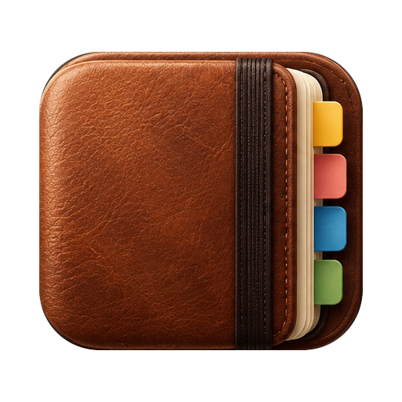

Progetto personale
Organizzazione · Mac
Vita
Tutto quello che stai facendo, in una pagina.
Un hub personale che legge posta, agenda, progetti e cartelle di lavoro, e ogni mattina mi dice cosa conta. È un progetto mio, fatto per passione: lo uso ogni giorno, ma non so se uscirà mai dal retrobottega.
Un brief al mattino
Scadenze, risposte che aspetto, impegni della giornata: solo quello che chiede un’azione.
La vita divisa in aree
Lavoro, casa, progetti, salute. Ogni area ha il suo colore e si riconosce a colpo d’occhio.
Niente da tenere in ordine
Non si compilano elenchi a mano: l’hub rilegge ogni volta le cartelle e le fonti.
Le tappe
Tutte le liste sparse, tra appunti, note e promemoria, finiscono in una cartella sola. Nasce l’hub.
Arriva il giornale delle giornate, e con lui la prima scoperta scomoda: a settembre le sere erano quasi sparite dentro il lavoro.
Si scrive una costituzione di quattordici articoli. Uno dice che l’hub non manda notifiche e non misura il suo successo nel tempo che ci passi dentro.
Le sessioni di lavoro si cancellano da sole dopo trenta giorni, e qualcosa va perso. Nasce la regola più importante: ogni cosa che entra ha una ricevuta finché non trova posto.
Passando il mouse su una voce compariva un dettaglio, e non lo sapevo nemmeno io. Ora ogni nome nel testo diventa una scheda, come i tooltip di World of Warcraft.
Dal telefono si condivide qualunque cosa, una foto, un PDF, un messaggio, e un paio di minuti dopo è nell’hub.
- Prossima tappa
Le prove d’uso: guardare come lo uso davvero, prima di aggiungere altro.